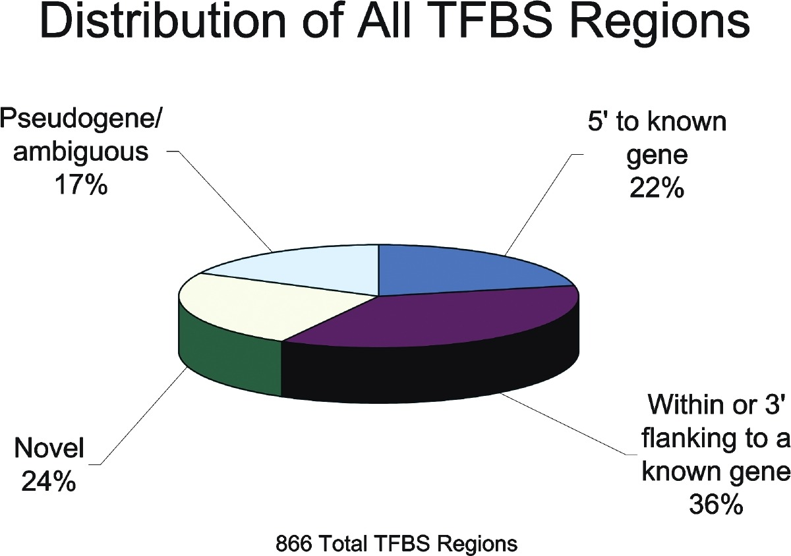

boxplot(airquality$Ozone)ENV222 EXERCISE
R in statistics
üëâüèªClick to enter the note section
0 Quiz 1
1.
The distribution is shown in Figure @ref(fig:box).
2.
rticles
3.
plot(1,
type = 'n',
axes = FALSE,
xlab = expression(NH[3] * " (" * mu* "mol m"^-3 * ")"),
ylab = '')dtf <- c('1', '2', '3')
library(latex2exp)
plot(dtf, pch = 16, las = 1,
xlab = TeX('$NH_3$ ($\\mu$mol m$^{-3}$)'),
xaxt = "n", yaxt ="n",
line=0.4)
mymat <- matrix(c(1, 2, 3, 0), nrow = 2)
layout(mymat, widths = c(4, 1), heights = c(2, 1)) # Set the ratio between widths and heights
plot(iris$Sepal.Length, iris$Sepal.Width, pch=20, xlab='Sepal Length (cm)', ylab='Sepal Width (cm)', las=1)
boxplot(iris$Sepal.Length, pch=20, las=1, horizontal=T)
boxplot(iris$Sepal.Width, pch=20, las=2)
x <- 'pack my box with five dozen liquor jugs'
xsingle <- strsplit(x, split = "")[[1]]
xsingle <- xsingle[xsingle != " "]
length(xsingle)[1] 32mytab <- table(xsingle)
names(mytab[mytab == max(mytab)])[1] "i" "o"library(dplyr)
x <- "pack my box with five dozen liquor jugs"
char_freq <- gsub(" ", "", x) |>
strsplit("") |>
table() |>
data.frame() |>
arrange(desc(Freq))
head(char_freq, 5) Var1 Freq
1 i 3
2 o 3
3 e 2
4 u 2
5 a 1xword <- strsplit(x, " ")[[1]]
xword[which.max(nchar(xword))][1] "liquor"gsub('five', '5', x)[1] "pack my box with 5 dozen liquor jugs"[1] "English_United States.1252"sum(diff(mydata$date) != 1)[1] 0mydata$year <- as.integer(format(mydata$date, '%Y'))mydata$month <- format(mydata$date, '%B')mydata$weekday <- format(mydata$date, '%A')Result:
mydata# A tibble: 65,533 × 13
date ws wd nox no2 o3 pm10 so2 co pm25
<dttm> <dbl> <int> <int> <int> <int> <int> <dbl> <dbl> <int>
1 1998-01-01 00:00:00 0.6 280 285 39 1 29 4.72 3.37 NA
2 1998-01-01 01:00:00 2.16 230 NA NA NA 37 NA NA NA
3 1998-01-01 02:00:00 2.76 190 NA NA 3 34 6.83 9.60 NA
4 1998-01-01 03:00:00 2.16 170 493 52 3 35 7.66 10.2 NA
5 1998-01-01 04:00:00 2.4 180 468 78 2 34 8.07 8.91 NA
6 1998-01-01 05:00:00 3 190 264 42 0 16 5.50 3.05 NA
7 1998-01-01 06:00:00 3 140 171 38 0 11 4.23 2.26 NA
8 1998-01-01 07:00:00 3 170 195 51 0 12 3.88 2.00 NA
9 1998-01-01 08:00:00 3.36 170 137 42 1 12 3.35 1.46 NA
10 1998-01-01 09:00:00 3.96 170 113 39 2 12 2.92 1.20 NA
# … with 65,523 more rows, and 3 more variables: year <int>, month <chr>,
# weekday <chr>1 Rmarkdown Exercise
NA
2 Character Exercise
NA
3 Time Exercise
1. Today
- Which day of the year is it?
Sys.time()[1] "2023-04-19 10:37:56 CST"- Convert it as “Year, Month in English and Date, Weekday in English”, such as “2023, January 1, Sunday”.
format(Sys.Date(), format = '%Y, %B, %d, %A')[1] "2023, April, 19, Wednesday"- Suppose we get to know each other at 15:00, September 13, 2022. How many days have we known each other until now? How many hours? How many seconds?
t1 <- Sys.time()
t2 <- strptime( "2022-9-13 15:00:00", format="%Y-%m-%d %H:%M:%S" )
difftime(time1 = t1, time2 = t2, units = 'secs')Time difference of 18819476 secsdifftime(time1 = t1, time2 = t2, units = 'days')Time difference of 217.818 daysdifftime(time1 = t1, time2 = t2, units = 'hours')Time difference of 5227.632 hours- The anniversary is September 13, 2023. What day is it? How about in 2024? Plot a graph for September 13 of each year, with the weekday as x and the year as y.
t3 <- as.Date( "9/13/2023", format="%m/%d/%Y" )
format(t3, format="%A")[1] "Wednesday"t4 <- as.Date( "9/13/2024", format="%m/%d/%Y" )
format(t4, format="%A")[1] "Friday"dates <- seq(as.Date("2020-09-13"), as.Date("2040-09-13"), by="year")
weekdays <- factor(weekdays(dates, abbreviate=TRUE),
levels=c("Sun", "Mon", "Tue", "Wed", "Thu", "Fri", "Sat"))
weekdays <- as.integer(format(dates, "%u"))
plot(weekdays, as.Date(dates, format="%Y" ),
xlab="Weekday", ylab="Year", main="September 13th, 2020-2040")
2. The airquality dataset
- Create a new column “Date”, showing the date in the format of “Year-month-day”, such as “2023-01-31”.
air<-read.csv("data/airquality.csv")
day <- paste("2022-",air$Month,"-",air$Day,sep="")
air$Date <- as.Date(day, format="%Y-%m-%d")- Plot a graph for each atmospheric variable (i.e. ozone in ppb, solar radiation in W m-2, wind speed in m s-1, air temperature in °C) against the date.
air1<-na.omit(air)
subsets <- split(air1, air1$Month)
plots <- lapply(subsets, function(subset) {
plot(subset$Day, subset$Ozone,ylab = "Ozone pbb" ,main = paste("Ozone, ", unique(subset$Month))
)})
par(mfrow = c(2, 3))
for (i in seq_along(plots)) {
plot(plots[[i]])
}
library(ggthemes)
library(latex2exp)
dtf <- airquality
dtf5 <- dtf %>% subset(Date < "1973-06-01")
ggplot(dtf5) +
geom_point(aes(x = Date, y = Ozone))+
labs(y = "Ozone (ppb)") +
theme_classic() +
theme(axis.text.x = element_text(angle = 45, hjust = 1))
ggplot(dtf5) +
geom_point(aes(x = Date, y = Solar.R))+
labs(y = TeX("$\\text{Solar Radiation } (W\\cdot m^{-2})$")) +
theme_classic() +
theme(axis.text.x = element_text(angle = 45, hjust = 1))
ggplot(dtf5) +
geom_point(aes(x = Date, y = Wind))+
labs(y = TeX("$\\text{Wind speed }m\\cdot m^{-1}$")) +
theme_classic() +
theme(axis.text.x = element_text(angle = 45, hjust = 1))
ggplot(dtf5) +
geom_point(aes(x = Date, y = Temp))+
labs(y = TeX("$\\text{Temperature }\\circ C$")) +
theme_classic() +
theme(axis.text.x = element_text(angle = 45, hjust = 1))- Create a new column “Weekday”, showing the day in the week (1 as Monday and 7 as Sunday).
# install.packages("lubridate")
library(lubridate)
dtf$Weekday <- wday(as.Date(dtf$Date), week_start = 1)- Calculate the mean values of each atmospheric variable for each weekday.
air1<-na.omit(air)
tapply(as.numeric(air1$Ozone),air1$Weekday,mean)
library(tidyverse)
mean_dtf <- dtf %>%
drop_na() %>%
group_by(Weekday) %>%
summarise(Ozone = mean(Ozone),
Solar.R = mean(Solar.R),
Wind = mean(Wind),
Temp = mean(Temp))- Plot a graph for each atmospheric variable with the mean values against the weekdays.
library(latex2exp)
library(patchwork)
mean_ozone <- ggplot(mean_dtf) +
geom_line(aes(x = Weekday, y = Ozone)) +
labs(y = "Ozone (ppb)") +
theme_classic()
mean_solar <- ggplot(mean_dtf) +
geom_line(aes(x = Weekday, y = Solar.R)) +
labs(y = TeX("$\\text{Solar Radiation } (W\\cdot m^{-2})$")) +
theme_classic()
mean_wind <- ggplot(mean_dtf) +
geom_line(aes(x = Weekday, y = Wind))+
labs(y = TeX("$\\text{Wind speed }m\\cdot m^{-1}$")) +
theme_classic()
mean_temp <- ggplot(mean_dtf) +
geom_line(aes(x = Weekday, y = Temp))+
labs(y = TeX("$\\text{Temperature }\\circ C$")) +
theme_classic()3. The Smart Flux data set The smartflux.zip data set was obtained from the flux observation at the Outdoor Research and Teaching Station (ORTS), XJTLU. It was supposed to be an automatic continuous measurement at a half-hourly base, saved in daily files. However, there were missing data in the records for some reason. How many data files are missing? How many records are missing?
setwd("data/smartflux/") # Remeber to delete the first file
temp <- list.files() %>%
substr(start = 1, stop =10) %>%
strptime(format = "%Y-%m-%d") %>%
format("%Y-%m-%d")
missing_files <- 0
for(i in 1:(length(temp)-1)){
diff <- as.vector(difftime(temp[i+1], temp[i], units = "days"))
if(diff != 1){
missing_files <- missing_files + diff -1
}
}
print(missing_files)
temp <- list.files()
files <- lapply(temp, function(i){
read.table(i, fill = TRUE)
})
missing_records <- 0
for(i in 1:length(files)){
records <- length(files[[i]][3:nrow(files[[i]]),4])
missing_records <- missing_records + 48 - records
}
missing_records <- missing_records + 48 * missing_files
print(missing_records)4 Plot Exercise
- I think the range of the colour is enough by using red to blue, purple is unnecessary which may lead the graph ugly.
- Where are the x and y labs? Although information are simple, but we still need the basic elements.

- The main problem is there do not have any unit in the y label. Further more, I think we’d better not to use this type of cover like p53-/-.
- We’d better not to use 3D plot in our essay, especially for some plot which involving proportionality.
 - Those two figures can be combine together with different colour. And maybe there is one more thing that we can change the theme to blank which will make readers more easy to figure.

- Where are the x and y labs? Although information are simple, but we still need the basic elements.
library(latex2exp)
plot(iris$Sepal.Length, iris$Petal.Length, pch = 16, las = 1,
xlab = TeX('D$_p$($\\mu$m)'),
ylab = expression(frac('dN', 'dlogD'[p] * '(cm' ^-3 * ')')))
mymat <- matrix(c(1, 2, 3, 4), nrow = 2)
layout(mymat, widths = c(1, 2, 3, 2), heights = c(2, 1, 1, 2))
plot(co2)
plot(co2)
plot(co2)
plot(co2)
- There are some errors related to the figure edges, which prevent me from generating a PDF_book.
See Figure @ref(fig:figure1).
5 R Tidyverse
stocks <- data.frame(year = c(2015, 2015, 2016, 2016),
half = c( 1, 2, 1, 2),
return = c(1.88, 0.59, 0.92, 0.17))
stocks_wide <- stocks %>%
pivot_wider(names_from = half, values_from = return)
stocks_wide# A tibble: 2 × 3
year `1` `2`
<dbl> <dbl> <dbl>
1 2015 1.88 0.59
2 2016 0.92 0.17# because the column names 1999 and 2000 are not being correctly referenced.
table4a %>%
pivot_longer(c(`1999`, `2000`), names_to = "year", values_to = "cases")# A tibble: 6 × 3
country year cases
<chr> <chr> <dbl>
1 Afghanistan 1999 745
2 Afghanistan 2000 2666
3 Brazil 1999 37737
4 Brazil 2000 80488
5 China 1999 212258
6 China 2000 213766# Because there are duplicate values(columns) in the name and names columns (Not tidy)
people <- tribble(
~name, ~names, ~values,
"Phillip Woods", "age", 45,
"Phillip Woods", "height", 186,
"Phillip Woods", "age", 50,
"Jessica Cordero", "age", 37,
"Jessica Cordero", "height", 156
)preg <- tribble(
~pregnant, ~male, ~female,
"yes", NA, 10,
"no", 20, 12
)
preg1 <- pivot_longer(preg,c("male","female"),names_to = "Gender",values_to = "Number")
preg1# A tibble: 4 × 3
pregnant Gender Number
<chr> <chr> <dbl>
1 yes male NA
2 yes female 10
3 no male 20
4 no female 125.
(1) To determine which plane (tailnum) has the worst on-time record, we can calculate the average departure delay for each plane and then sort the results in ascending order to find the plane with the highest average delay.
# install.packages("nycflights13")
library(dplyr)
library(nycflights13)
flights %>%
group_by(tailnum) %>%
summarize(avg_dep_delay = mean(dep_delay, na.rm = TRUE)) %>%
arrange(desc(avg_dep_delay)) %>%
head(1)# A tibble: 1 × 2
tailnum avg_dep_delay
<chr> <dbl>
1 N844MH 297
(2) We should depart at 5am, with a smallest time of dalay of 0.688 min on average.
flights %>%
group_by(hour) %>%
summarize(avg_dep_delay = mean(dep_delay, na.rm = TRUE)) %>%
arrange(avg_dep_delay) %>%
head(2)# A tibble: 2 × 2
hour avg_dep_delay
<dbl> <dbl>
1 5 0.688
2 6 1.64
(3) To compute the total minutes of delay for each destination, we can group the flights by destination and calculate the total arrival and departure delays. And then we can add those two values together to get the total delay for each destination.
flights %>%
group_by(dest) %>%
summarise(total_delay = sum(arr_delay + dep_delay, na.rm = TRUE))# A tibble: 105 × 2
dest total_delay
<chr> <dbl>
1 ABQ 4603
2 ACK 2983
3 ALB 15819
4 ANC 83
5 ATL 399462
6 AUS 45898
7 AVL 4216
8 BDL 10205
9 BGR 9732
10 BHM 12345
# … with 95 more rowsflights %>%
group_by(dest) %>%
mutate(total_delay = arr_delay + dep_delay) %>%
mutate(prop_delay = total_delay / sum(total_delay, na.rm = TRUE))# A tibble: 336,776 × 21
# Groups: dest [105]
year month day dep_time sched_de…¹ dep_d…² arr_t…³ sched…⁴ arr_d…⁵ carrier
<int> <int> <int> <int> <int> <dbl> <int> <int> <dbl> <chr>
1 2013 1 1 517 515 2 830 819 11 UA
2 2013 1 1 533 529 4 850 830 20 UA
3 2013 1 1 542 540 2 923 850 33 AA
4 2013 1 1 544 545 -1 1004 1022 -18 B6
5 2013 1 1 554 600 -6 812 837 -25 DL
6 2013 1 1 554 558 -4 740 728 12 UA
7 2013 1 1 555 600 -5 913 854 19 B6
8 2013 1 1 557 600 -3 709 723 -14 EV
9 2013 1 1 557 600 -3 838 846 -8 B6
10 2013 1 1 558 600 -2 753 745 8 AA
# … with 336,766 more rows, 11 more variables: flight <int>, tailnum <chr>,
# origin <chr>, dest <chr>, air_time <dbl>, distance <dbl>, hour <dbl>,
# minute <dbl>, time_hour <dttm>, total_delay <dbl>, prop_delay <dbl>, and
# abbreviated variable names ¹​sched_dep_time, ²​dep_delay, ³​arr_time,
# ⁴​sched_arr_time, ⁵​arr_delay(4)
(5) For each plane in each month, we can group the flights data by tailnum and month
flights %>%
group_by(tailnum, month) %>%
summarise(flights = n())# A tibble: 37,988 × 3
# Groups: tailnum [4,044]
tailnum month flights
<chr> <int> <int>
1 D942DN 2 1
2 D942DN 3 2
3 D942DN 7 1
4 N0EGMQ 1 41
5 N0EGMQ 2 28
6 N0EGMQ 3 30
7 N0EGMQ 4 29
8 N0EGMQ 5 13
9 N0EGMQ 6 32
10 N0EGMQ 7 11
# … with 37,978 more rows6 Post-hoc tests
- They have a significant different of the mean sepal length at alpha level at 0.05
library(agricolae)
iris.aov <- aov(Sepal.Length ~ Species, data = iris)
summary(iris.aov) Df Sum Sq Mean Sq F value Pr(>F)
Species 2 63.21 31.606 119.3 <2e-16 ***
Residuals 147 38.96 0.265
---
Signif. codes: 0 '***' 0.001 '**' 0.01 '*' 0.05 '.' 0.1 ' ' 1LSD.test(iris.aov, "Species", console = TRUE)
Study: iris.aov ~ "Species"
LSD t Test for Sepal.Length
Mean Square Error: 0.2650082
Species, means and individual ( 95 %) CI
Sepal.Length std r LCL UCL Min Max
setosa 5.006 0.3524897 50 4.862126 5.149874 4.3 5.8
versicolor 5.936 0.5161711 50 5.792126 6.079874 4.9 7.0
virginica 6.588 0.6358796 50 6.444126 6.731874 4.9 7.9
Alpha: 0.05 ; DF Error: 147
Critical Value of t: 1.976233
least Significant Difference: 0.2034688
Treatments with the same letter are not significantly different.
Sepal.Length groups
virginica 6.588 a
versicolor 5.936 b
setosa 5.006 cpairwise.t.test(iris$Sepal.Length, iris$Species, p.adjust.method = "bonferroni")
Pairwise comparisons using t tests with pooled SD
data: iris$Sepal.Length and iris$Species
setosa versicolor
versicolor 2.6e-15 -
virginica < 2e-16 8.3e-09
P value adjustment method: bonferroni - The haematocrit measurements are the different for at least two water sources at significant level of 0.01. For details, Dushu and Control have significant difference.
inflen <- data.frame("HTC"= c(38, 40, 32, 36, 40, 40, 38, 40, 38, 40, 36, 40, 40, 35, 45,
56, 60, 50, 50, 50, 35, 40, 40, 55, 35,
40, 42, 38, 46, 36),
"Source" = c(rep("Control",15),
rep("Dushu",10),
rep("Jinji",5)))
wg_aov1 <- aov(HTC~Source, data = inflen)
summary(wg_aov1) Df Sum Sq Mean Sq F value Pr(>F)
Source 2 450.5 225.23 6.669 0.00443 **
Residuals 27 911.8 33.77
---
Signif. codes: 0 '***' 0.001 '**' 0.01 '*' 0.05 '.' 0.1 ' ' 1summary(LSD.test(wg_aov1, "Source", alpha = 0.01,console = T))
Study: wg_aov1 ~ "Source"
LSD t Test for HTC
Mean Square Error: 33.7716
Source, means and individual ( 99 %) CI
HTC std r LCL UCL Min Max
Control 38.53333 2.996824 15 34.37598 42.69069 32 45
Dushu 47.10000 8.987028 10 42.00830 52.19170 35 60
Jinji 40.40000 3.847077 5 33.19925 47.60075 36 46
Alpha: 0.01 ; DF Error: 27
Critical Value of t: 2.770683
Groups according to probability of means differences and alpha level( 0.01 )
Treatments with the same letter are not significantly different.
HTC groups
Dushu 47.10000 a
Jinji 40.40000 ab
Control 38.53333 b Length Class Mode
statistics 4 data.frame list
parameters 5 data.frame list
means 10 data.frame list
comparison 0 -none- NULL
groups 2 data.frame listinflen_pt <- pairwise.t.test(inflen$HTC, inflen$Source, pool.sd = FALSE,var.equal = TRUE, p.adj = "bonferroni")
inflen_pt
Pairwise comparisons using t tests with non-pooled SD
data: inflen$HTC and inflen$Source
Control Dushu
Dushu 0.0066 -
Jinji 0.8227 0.4191
P value adjustment method: bonferroni inflen_pt$p.value < 0.01 Control Dushu
Dushu TRUE NA
Jinji FALSE FALSESessionInfo:
R version 4.2.3 (2023-03-15 ucrt)
Platform: x86_64-w64-mingw32/x64 (64-bit)
Running under: Windows 10 x64 (build 19044)
Matrix products: default
locale:
[1] LC_COLLATE=Chinese (Simplified)_China.utf8
[2] LC_CTYPE=Chinese (Simplified)_China.utf8
[3] LC_MONETARY=Chinese (Simplified)_China.utf8
[4] LC_NUMERIC=C
[5] LC_TIME=English_United States.1252
attached base packages:
[1] stats graphics grDevices utils datasets methods base
other attached packages:
[1] agricolae_1.3-5 nycflights13_1.0.2 lubridate_1.9.2 forcats_1.0.0
[5] stringr_1.5.0 purrr_1.0.1 readr_2.1.4 tidyr_1.3.0
[9] tibble_3.1.8 ggplot2_3.4.1 tidyverse_2.0.0 openair_2.16-0
[13] dplyr_1.1.0 latex2exp_0.9.6
loaded via a namespace (and not attached):
[1] maps_3.4.1 jsonlite_1.8.4 splines_4.2.3
[4] shiny_1.7.4 highr_0.10 latticeExtra_0.6-30
[7] yaml_2.3.7 pillar_1.8.1 lattice_0.20-45
[10] glue_1.6.2 digest_0.6.31 RColorBrewer_1.1-3
[13] promises_1.2.0.1 colorspace_2.1-0 htmltools_0.5.4
[16] httpuv_1.6.9 Matrix_1.5-3 klaR_1.7-2
[19] pkgconfig_2.0.3 labelled_2.10.0 haven_2.5.1
[22] questionr_0.7.8 xtable_1.8-4 scales_1.2.1
[25] jpeg_0.1-10 later_1.3.0 tzdb_0.3.0
[28] timechange_0.2.0 combinat_0.0-8 mgcv_1.8-42
[31] generics_0.1.3 ellipsis_0.3.2 withr_2.5.0
[34] hexbin_1.28.3 cli_3.6.1 magrittr_2.0.3
[37] mime_0.12 deldir_1.0-6 evaluate_0.20
[40] fansi_1.0.3 nlme_3.1-162 MASS_7.3-58.2
[43] tools_4.2.3 hms_1.1.2 lifecycle_1.0.3
[46] interp_1.1-3 munsell_0.5.0 cluster_2.1.4
[49] compiler_4.2.3 rlang_1.1.0 grid_4.2.3
[52] rstudioapi_0.14 htmlwidgets_1.6.1 miniUI_0.1.1.1
[55] rmarkdown_2.21 gtable_0.3.3 AlgDesign_1.2.1
[58] R6_2.5.1 knitr_1.42 fastmap_1.1.0
[61] utf8_1.2.3 stringi_1.7.12 Rcpp_1.0.10
[64] vctrs_0.5.2 mapproj_1.2.11 png_0.1-8
[67] tidyselect_1.2.0 xfun_0.37